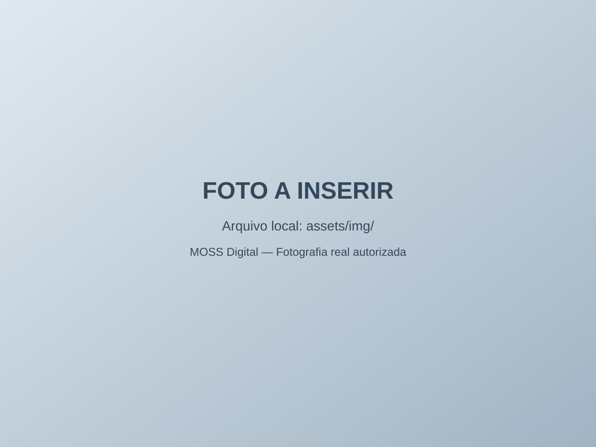

PAINEL DE OPERAÇÃO
Chamados sem complicação.
Experimente como um pequeno prestador de suporte poderia organizar solicitações.

MINHA FILA
Painel de chamados
Nenhum chamado nesta demonstração.
Atenção: os chamados são guardados apenas no navegador usado. Não use informações reais, senhas, números de documentos ou dados de clientes neste protótipo.
CADASTRO LOCAL
Criar chamado de exemplo
Registre uma solicitação fictícia para testar prioridades e andamento.
Acesso por usuário
Login e permissões para equipe.
Histórico centralizado
Supabase e banco de dados para chamados.
Alertas
Notificações e registro de atendimento.